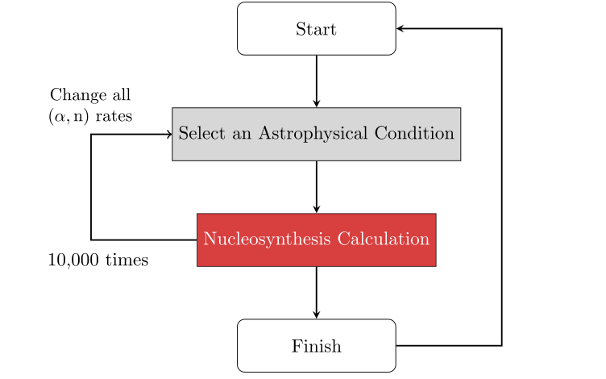
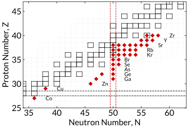
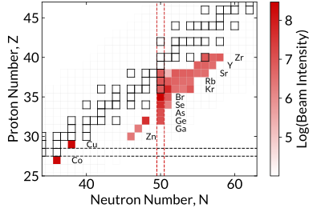
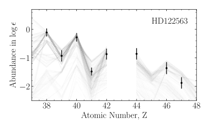
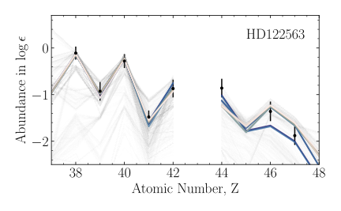
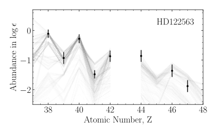
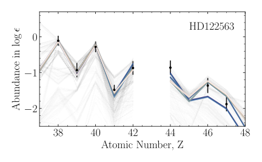

Neutrino-Driven Outflows and
the Origin of Light Heavy Elements
Thanassis Psaltis
Triangle Universities Nuclear Laboratory &
North Carolina State University
September 22, 2023
Nuclei in the Cosmos (NIC-XVII)
Image Credit: NASA/CXC/SAO
Poster #xx
On Primordial Novae Nucleosynthesis
HD 122563 (DSS2/ Aladin Sky Atlas)
What do the ancient stars show us?
See talks by xxxx • ‼️ r-process = total solar - s-process - γ-process
How many processes contribute to the production
of elements between
strontium and silver?
What is the impact of the
$\mathbf{(\alpha,xn)}$ reactions
in
the weak $r$-process?
How well do we know the $(\alpha,xn)$ reaction rates?

The $(\alpha,xn)$ reaction rates are sensitive to the $\alpha$-nucleus potential and their uncertainties can be up to two orders of magnitude.
Framework of the sensitivity study
The impact of updated $(\alpha,n)$ reaction rates to elemental abundances

Same model, but different $(\alpha, xn)$ reaction rates!
Which are the most important
$\mathbf{(\alpha,xn)}$ reactions
for
the weak $r$-process?
The most important $(\alpha,n)$ reactions for the weak $r$-process
N=50 shell closure is a bottleneck for T= 4-5 GK due to the $(n,\gamma) \leftrightarrow (\gamma,n)$ equilibrium
Can we study the most important
$\mathbf{(\alpha,xn)}$ reactions in the lab?
Most of the relevant beams are accessible!
First measurement of the $\boldsymbol{\mathrm{^{93}Sr}(\alpha,xn)}$ reaction at Argonne with MUSIC
Proposal #1923, PI: A. Psaltis, co-PI: W.J. Ong
Which are the most favorable
astrophysical conditions?
Results for HD 122563 using two trajectories

 



Which are the most favorable conditions?
Can isotopic abundances from meteorites reveal supernova nucleosynthesis signatures?
Secrets in the stardust?

See also talk by N. Liu (Tuesday)
What is on the horizon?
New experimental measurements of the key $(\alpha, xn)$ reactions and multi-messenger observations will help us constrain the contribution of neutrino-driven outflows to the production elements between strontium and silver.
Acknowledgements
 Almudena Arcones
Almudena Arcones
 Melina Avila
Melina Avila
 Camilla Juul Hansen
Camilla Juul Hansen
 Peter Mohr
Peter Mohr
 Fernando Montes
Fernando Montes
 Wei Jia Ong
Wei Jia Ong
 Hendrik Schatz
Hendrik Schatz


Summary
- The weak $r$-process in neutrino-driven outflows can contribute to the production of the light heavy elements between Sr and Ag.
- We explored the impact of $(\alpha,xn)$ reactions to the weak $r$-process and identified the most important of them.
- We investigated which are the most common astrophysical conditions of the neutrino-driven outflows that fit the the observed abundances in metal-poor stars.
- Experiments in the current and next-generation RIB facilities, multimessenger observations and theoretical modeling will enhance our understanding of the origin of the light heavy elements.